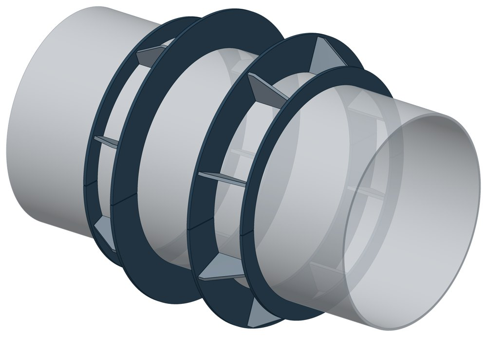
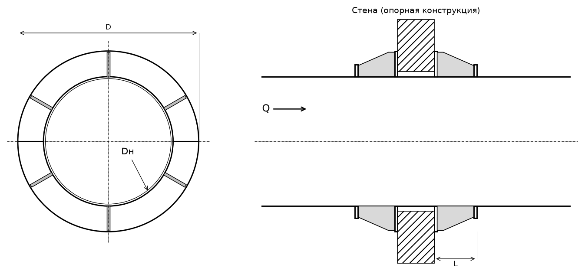

Опора неподвижная щитовая усиленная ТС-667
Щитовая опора с усилением: с каждой стороны стены на трубе стоит кольцо-щит из двух половин с рёбрами. По торцам рёбер добавлено усиливающее кольцо. Щиты упираются в стену всей площадью.

- Диаметр трубы Dн
- 426–1420 мм
- Документ
- Серия 5.903-13 вып. 7-95
- Исполнений
- 10
- Осевая Q
- до 6000 кН
- Масса
- 48,8–430 кг
- Сталь
- Листовые детали — Ст3сп5 ГОСТ 14637-89. Для холодного климата — низколегированная сталь, в том числе 09Г2С; размеры опоры при этом не меняются.
- Покрытие
- По альбому серии — окраска по грунту, кроме поверхностей под сварку. Вид покрытия согласуется при заказе.
- 3D-модели
- у всех исполнений
Применение и монтаж
Назначение: где применяется
Трубопроводы тепловых сетей Dн 426–1420 мм. Держит осевую силу Q от 550 до 6000 кН. Опорная конструкция — стена с отверстием под трубу.
Монтаж: как устанавливается
Половины щитов приваривают к трубе с обеих сторон стены и сваривают между собой, усиливающие полукольца — к торцам рёбер. К стене щиты не приваривают. Зазор между трубой и отверстием заделывают просмолённой паклей.
Отличия от соседних типов
Сила меньше или диаметр от 108 мм — обычная щитовая ТС-666, без усиливающего кольца (до 3300 кН). Опорная конструкция из балок, а не стена — упорные ТС-661 или ТС-664.
Габаритная схема ТС-667

Состав комплекта на одну опору
| Щит (полукольцо с рёбрами) | 4 шт. |
| Полукольцо усиливающее | 4 шт. |
Таблица исполнений ТС-667
| Обозначение | Код ПРОМБУРГ | Dнмм | Стенка Sмм | QкН | Габарит Dмм | Длина упора Lмм | Массакг | 3D |
|---|---|---|---|---|---|---|---|---|
| ТС-667.00.00 | ПБ-667-0426-1 | 426 | 7 | 550 | 610 | 144 | 48,8 | 3D |
| ТС-667.00.00-01 | ПБ-667-0530-1 | 530 | 8 | 800 | 740 | 174 | 69,2 | 3D |
| ТС-667.00.00-02 | ПБ-667-0630-1 | 630 | 8 | 1150 | 870 | 174 | 97,4 | 3D |
| ТС-667.00.00-03 | ПБ-667-0720-1 | 720 | 9 | 1450 | 975 | 174 | 114,3 | 3D |
| ТС-667.00.00-04 | ПБ-667-0820-1 | 820 | 9 | 1800 | 1110 | 238 | 142,8 | 3D |
| ТС-667.00.00-05 | ПБ-667-0920-1 | 920 | 10 | 2250 | 1220 | 242 | 212,4 | 3D |
| ТС-667.00.00-06 | ПБ-667-1020-1 | 1020 | 10 | 2650 | 1330 | 282 | 262,2 | 3D |
| ТС-667.00.00-07 | ПБ-667-1220-1 | 1220 | 11 | 3650 | 1570 | 302 | 334,6 | 3D |
| ТС-667.00.00-08 | ПБ-667-1420-1 | 1420 | 10 | 4850 | 1640 | 306 | 282 | 3D |
| ТС-667.00.00-09* | ПБ-667-1420-2 | 1420 | 14 | 6000 | 1820 | 315 | 430 | 3D |
* Примечания к исполнениям:
- ТС-667.00.00-09 — S: 4 → 14, ошибка сайта; альбом, лист 77;
Чтобы заказать, сообщите обозначение и код ПРОМБУРГ: +7 (499) 325-51-35, promburg@yandex.ru.
Нормативные документы
- Серия 5.903-13 вып. 7-95 Опоры трубопроводов неподвижные. Рабочие чертежи (PDF, 127 с.) — документ, по которому изготавливается изделие
- ГОСТ 14637-89 Прокат толстолистовой из углеродистой стали обыкновенного качества — редакция, на которую ссылается альбом серии; действующую редакцию уточняйте
Связанные позиции
- Облегчённое исполнение: ТС-666 — неподвижная щитовая (обычное (неусиленное) исполнение)
- Парная подвижная опора: ТС-624 — скользящая приварная (общий диапазон Dн 426–1420)
Собрать узел с этим изделием
- Конструктор узла: собрать участок с компенсатором под свои данные труба, длина, среда, условия — состав узла и спецификация бесплатно
На трубу Dн 426–1420 мм в каталоге
Позиции каталога с исполнениями на те же наружные диаметры трубы.
Детали трубопровода
- Днище стальное эллиптическое общих Dн: 9
- Фланец стальной плоский приварной общих Dн: 9
- Фланец стальной воротниковый общих Dн: 8
- Отвод стальной крутоизогнутый 90° общих Dн: 7
- Отвод стальной крутоизогнутый 90°, 09Г2С общих Dн: 5
- Заглушка стальная эллиптическая общих Dн: 3
- Переход стальной концентрический общих Dн: 2
Компенсаторы
- Компенсатор сильфонный стартовый СК общих Dн: 9
- Компенсатор сильфонный 2ОПКР общих Dн: 8
- Компенсатор сильфонный 2ОПКР (ИЯНШ) 2ОПКРИ общих Dн: 8
- Компенсатор сильфонный 2СКУ.М 2СКУМ общих Dн: 8
- Компенсатор сильфонный 2СКУ.М (ИЯНШ) 2СКУМИ общих Dн: 8
- Компенсатор сильфонный 2СКУ.ППМ (ИЯНШ) 2СКУППМИ общих Dн: 8
- Компенсатор сильфонный КС общих Dн: 8
- Компенсатор сильфонный КСО общих Dн: 8
- Компенсатор сильфонный КСО (ИЯНШ) КСОИ общих Dн: 8
- Компенсатор сильфонный КСОФ общих Dн: 8
- Компенсатор сильфонный ОПКР общих Dн: 8
- Компенсатор сильфонный ОПКР (ИЯНШ) ОПКРИ общих Dн: 8
- Компенсатор сильфонный сейсмический общих Dн: 8
- Компенсатор сильфонный СКУ.М СКУМ общих Dн: 8
И ещё 14 типов — в оглавлении каталога.
Другие опоры и подвески
- Опора неподвижная двухупорная ТС-660 общих Dн: 9
- Опора неподвижная четырёхупорная ТС-661 общих Dн: 9
- Опора неподвижная двухупорная усиленная ТС-663 общих Dн: 9
- Опора неподвижная четырёхупорная усиленная ТС-664 общих Dн: 9
- Опора неподвижная щитовая ТС-666 общих Dн: 9
- Опора неподвижная боковая ТС-668 общих Dн: 9
- Опора неподвижная бугельная с корпусом ТС-671 общих Dн: 9
- Опора скользящая приварная ТС-624 общих Dн: 9
- Опора скользящая хомутовая ТС-626 общих Dн: 9
- Опора скользящая бугельная ТС-627 общих Dн: 9
И ещё 77 типов — в оглавлении каталога.
Другие типы раздела
Неподвижные опоры тепловых сетей (ТС-659…ТС-671)
- Опора неподвижная хомутовая ТС-659
- Опора неподвижная двухупорная ТС-660
- Опора неподвижная четырёхупорная ТС-661
- Опора неподвижная двухупорная усиленная ТС-663
- Опора неподвижная четырёхупорная усиленная ТС-664
- Опора неподвижная двухупорная сальниковых компенсаторов ТС-665
- Опора неподвижная щитовая ТС-666
- Опора неподвижная боковая ТС-668
- Опора неподвижная хомутовая бескорпусная ТС-669
- Опора неподвижная хомутовая с корпусом ТС-670
- Опора неподвижная бугельная с корпусом ТС-671
- Опора неподвижная двухупорная ТС-760
Частые вопросы
Какую неподвижную опору выбрать: хомутовую, упорную, щитовую?
Выбор идёт по расчётной осевой силе и по тому, на что опора опирается. Малый диаметр и небольшая сила — хомутовая ТС-659. Нужна высота под изоляцию — хомутовая с корпусом ТС-670 или бугельная ТС-671. Труба проходит сквозь стенку — щитовая ТС-666, при большой силе усиленная ТС-667. Упор в балку или траверсу — двух- и четырёхупорные ТС-660, ТС-661, при больших нагрузках усиленные ТС-663, ТС-664.
По какому диаметру подбирать — Dн или Ду?
По наружному диаметру трубы Dн: именно он стоит в таблицах серии. Ду — условный проход, округлённая величина: Ду 100 соответствует Dн 108. В заявке указывайте Dн и толщину стенки трубы.
Какую нагрузку выдерживает опора?
Допускаемая нагрузка задана в таблице для каждого исполнения — она в первой группе колонок каждой карточки. Хомутовая ТС-659 — осевая Q от 5 до 25 кН, щитовая ТС-666 — от 50 до 3300 кН, хомутовая с корпусом ТС-670 — Q до 380 кН и боковая T до 200 кН.
В старом проекте нагрузка в тс, а здесь в кН. Как сравнить?
Серия 4.903-10 даёт нагрузки в тонна-силах, серия 5.903-13 — в килоньютонах. 1 тс = 9,81 кН, то есть 10 тс — это около 98 кН. В таблицах каталога переключатель единиц пересчитывает значения.
Из какой стали изготавливаются опоры?
По рабочим чертежам серии листовые детали — Ст3сп5 ГОСТ 14637-89, хомуты из круга — сталь 20 ГОСТ 1050-88. Для районов с низкой расчётной температурой воздуха применяется низколегированная сталь, в том числе 09Г2С; размеры опор при этом не меняются. В заявке укажите расчётную температуру наружного воздуха.
Что указать в заявке, чтобы получить цену без уточнений?
Обозначение с номером исполнения или код ПБ, количество, Dн и стенку трубы, расчётную температуру наружного воздуха, покрытие, город доставки и желаемый срок. Кнопка «В заявку» в таблице собирает спецификацию, которую можно выгрузить в Excel или отправить письмом.